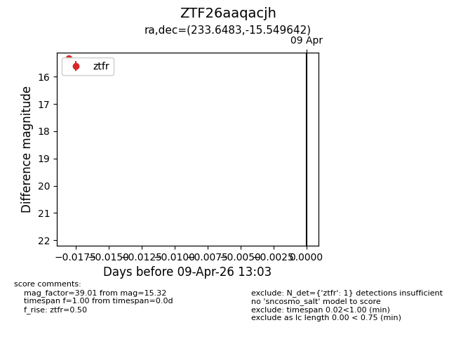
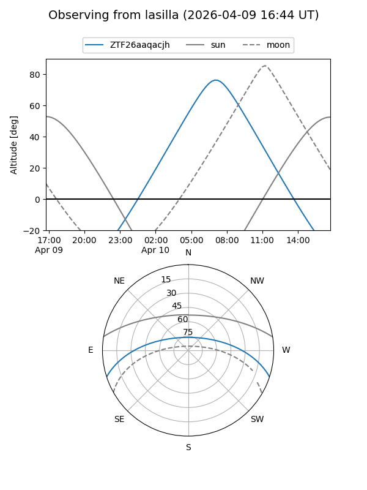
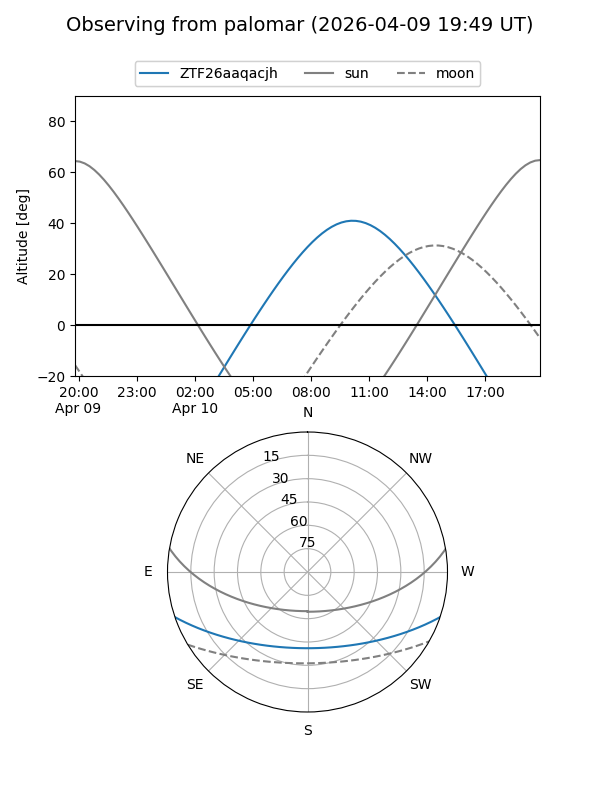

ZTF26aaqacjh
Target ZTF26aaqacjh at 2026-04-09 13:10
Aliases and brokers:
FINK: link
Lasair: link
ALeRCE: link
alt names
ZTF26aaqacjh (ztf,fink_ztf)
Coordinates:
equatorial (ra, dec) = 233.6483,-15.54964
equatorial (HMS+DMS) = 15:34:35.58,-15:32:58.71
galactic (l, b) = (350.7064,+31.79828)
Flags:
Photometry:
last ztfr=15.32
1 ztfr detections
Lightcurve

Visibility


Additional plots